Context
Press right arrow to continue
Note: Looks best in desktop Chrome/Safari
The secrets
of
Google Pac-Man

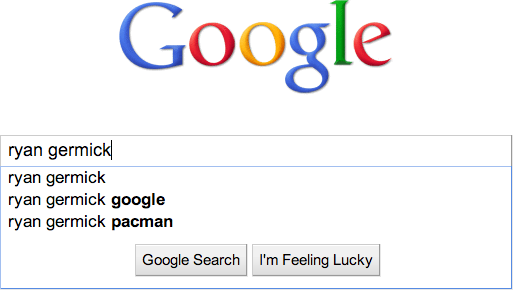
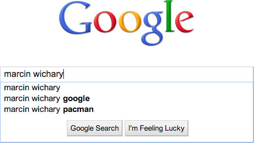

cover {
background: -webkit-linear-gradient(rgba(0, 0, 0, .5), transparent),
-webkit-linear-gradient(transparent, rgba(0, 0, 0, .33), rgba(0, 0, 0, .33), transparent, transparent, transparent, transparent, transparent, transparent);
background-size: 100% 2px, 1200px 620px;
background-clip: border-box;
pointer-events: none;
-webkit-animation-name: flicker;
-webkit-animation-duration: 2s;
-webkit-animation-iteration-count: infinite;
-webkit-animation-timing-function: linear;
}
@-webkit-keyframes flicker {
0% { opacity: .95; background-position: 0 0, 0 620px; }
10% { opacity: .9; }
20% { opacity: .75; }
30% { opacity: .9; }
40% { opacity: .75; }
50% { opacity: .9; }
80% { opacity: .7; }
90% { opacity: .92; }
100% { opacity: .9; background-position: 0 0, 0 0; }
}
The secrets
of
Google Pac-Man
Team
Pac-Man
Pac-Man
Team
Ms.
Pac-Man
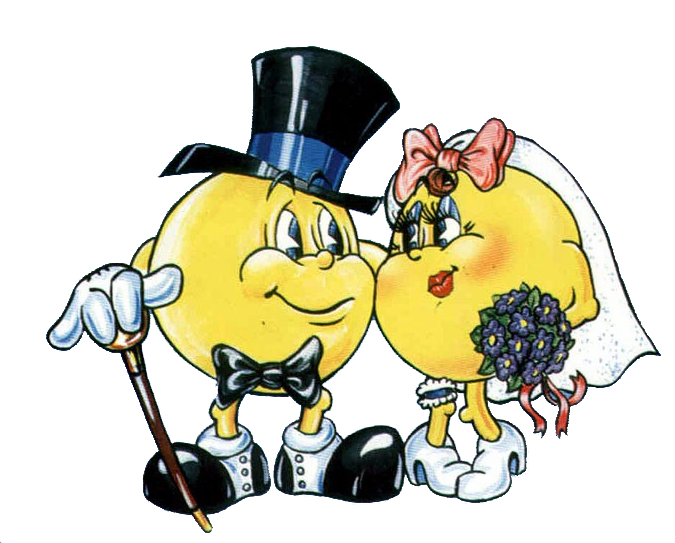
Ms.
Pac-Man
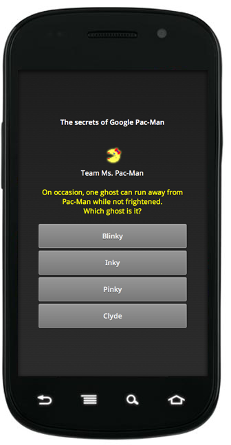
| History of Pac-Man and doodles | 200 | 400 | 800 | 1600 |
|---|---|---|---|---|
| Pac-Man, the game | 200 | 400 | 800 | 1600 |
| Technology | 200 | 400 | 800 | 1600 |
| Programming Pac-Man doodle | 200 | 400 | 800 | 1600 |
| User feedback | 200 | 400 | 800 | 1600 |
Final showdown!
(worth points)
0
0
http://goo.gl/8RqYt
@ m wichary @ ryan germick # io 2011 # techtalks
1
A doodle with sound
2
A doodle running for 48 hours
3
An interactive doodle
4
An animated doodle
5
A doodle using Flash
- A doodle with sound
- A doodle running for 48 hours
- An interactive doodle
- An animated doodle
- A doodle using Flash
1
Pac-Man
2
Ms. Pac-Man
3
Jr. Pac-Man
4
Baby Pac-Man
5
Professor Pac-Man
6
Pac-Dog
7
Pac-Pal
8
Super Pac-Man
- Pac-Man
- Ms. Pac-Man
- Jr. Pac-Man
- Baby Pac-Man
- Professor Pac-Man
- Pac-Dog
- Pac-Pal
- Super Pac-Man
Ms. Pac-Man
(1981)
“…four new mazes, added bonus fruit symbols that float freely
through the maze, two new side exits that give four chances
for get away and a unique cartoon series”


Jr. Pac-Man
(1983)
“Meet the new video kid on the block. Seven new mazes.
With horizontal scrolling, they’re twice as wide as before!”
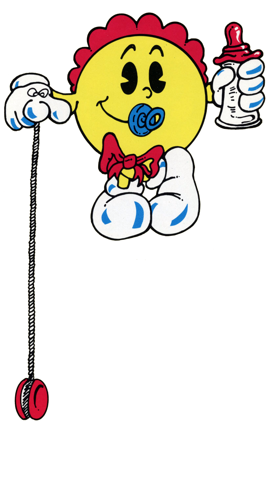
Baby Pac-Man
(1983)
“They lived happily chomping away and doing all the things Pac-People
do, when one day a stork delivered a bouncing bundle of joystick
joy, the brand new addition to the Pac-Clan!”
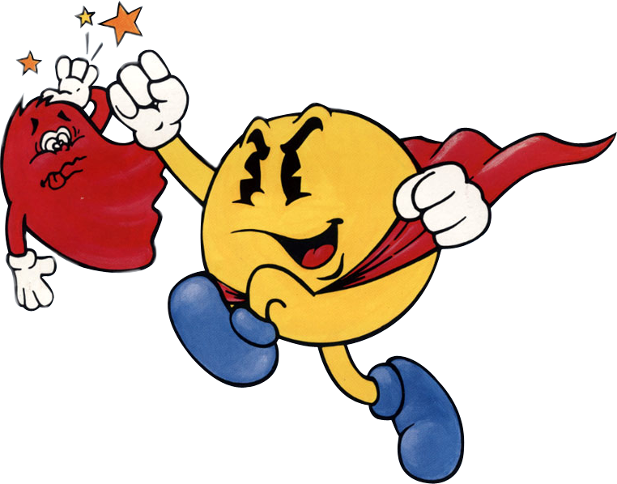
Super Pac-Man
(1982)
“Disguised as out mild-mannered Pac-Man, Super Pac-Man fights a never
ending battle to eat rows of fruit and objects, destroy enemy monsters
and rack up scores that are out of this world.”
Professor Pac-Man
(1983)
“…it’s FUN to learn from Professor Pac-Man!”
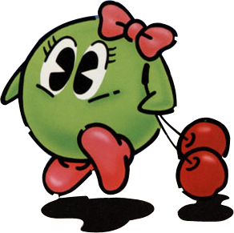
Pac & Pal
(1983)
1
Internet Explorer
2
Google Chrome
- Internet Explorer
- Google Chrome
// For all the browsers coming from a good home, we are doing it via CSS.
if (pacMan.useCss) {
el.style.backgroundImage = 'url(files/sprite.png)';
el.style.backgroundPosition = (-x) + 'px ' + (-y) + 'px';
el.style.backgroundRepeat = 'no-repeat';
} else {
// For old Internet Explorers with CSS background reloading bug, we put
// an image inside an element, and move it around.
el.style.overflow = 'hidden';
var style = 'display: block; position: relative; ' +
'left: ' + (-x) + 'px; top: ' + (-y) + 'px';
el.innerHTML = '<img style="' + style +
'" src="files/sprite.png">';
}
if (useCssTransforms) {
if (use3DTransforms) {
layerEls[i].style[cssTransformName] =
'translate3d(' + posX + 'px, ' + posY + 'px, 0)';
} else {
layerEls[i].style[cssTransformName] =
'translate(' + posX + 'px, ' + posY + 'px)';
}
} else {
layerEls[i].style.left = posX + 'px';
layerEls[i].style.top = posY + 'px';
}
1
1,000 lines
2
2,000 lines
3
5,000 lines
4
8,000 lines
- 1,000 lines
- 2,000 lines
- 5,000 lines
- 8,000 lines
onload="window.lol&&lol();setTimeout(function(){var h=0,v=1,
f=document.getElementById('fall'),i=setInterval(function(){
if(f){var r=parseInt(f.style.right)+h,b=parseInt(f.style.bottom)-v;
f.style.right=r+'px';f.style.bottom=b+'px';if(b>-210){v+=2}else
{h=(v>9)?v*0.1:0;v*=(v>9)?-0.3:0}}},25);google.rein&&google.rein.push(
function(){clearInterval(i);h=0;v=1})},2000)"
1
1 hour
2
10 hours
3
100 hours
4
1,000 hours
- 1 hour
- 10 hours
- 100 hours
- 1,000 hours
This is the original Atari code! All the tricks I learned in college
back in 1982 to try and beat this game work in this version! God, I
am so pathetic......
This is a poor clone of the game. It LOOKS good but plays horrible
(…) The ghosts are stupid (…) I didn't think it possible but it
appears somebody programmed a worse game than Atari Pac-Man (which
looks crap but is fun to play).
All the game details are spot-on, right down to the impulse to
ignore work, friends, family and play for hours. Curse you, Namco
and Google.
1
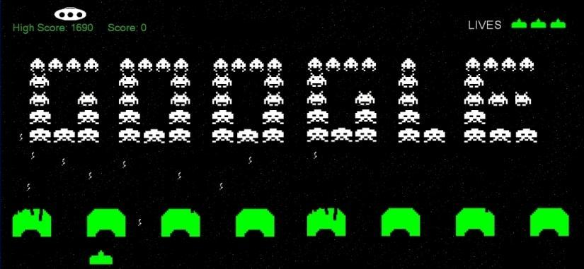
2
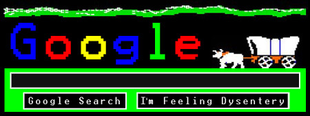
3
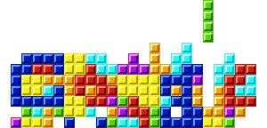
4
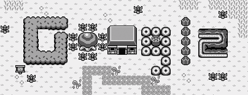
- Space Invaders
- Oregon Trail
- Tetris
- Zelda
1
Sound
2
Auto-play
3
No “I’m feeling lucky” button
4
Changed maze
- Sound
- Auto-play
- No “I’m feeling lucky” button
- Changed maze
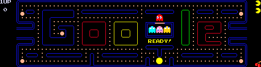
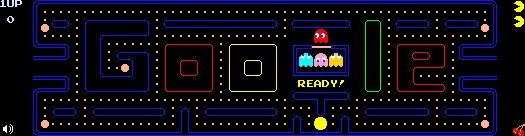
- no onload events when sounds are loaded
- no ability to preload sounds (even, seemingly, if you prime the cache yourself before) and no/limited control over streaming – the only way I could think of to pre-cache all the sounds was to try to play all of them at once, but I ran into a problem of not being able to control their volume!
- consequently, no certainty a given sound will play at the moment I want it to
(and not arbitrarily delayed) - a requirement—not unlike HTML5 Video—to prepare sounds in at least two different formats to cover both Mozilla and other browsers
- inconsistencies in reporting which file formats are supported:
“yes” vs. “no” vs. “maybe” (sic!) vs. “” vs. undefined! - problems playing multiple instances of the same sound
- problems seeking/rewinding a sound in FF
- no ability to play sound from timecode X to timecode Y, which subsequently limits looping and “spriting” of files (don’t want to open 15 HTTP connections to load 15 tiny files!)
- many (most?) of the above have subtle differences between browsers
- as far as I understand iPhone, iPad et al. do not support background audio at all
- very limited debugging options for the above
// For some reason, creating an <object> in DOM failed in IE. We need
// to put it in separate iframe to use document.write. The frame also
// needs to be a certain size for IE to use it.
pacMan.flashIframe = document.createElement('iframe');
pacMan.flashIframe.name = 'pm-sound';
pacMan.flashIframe.style.position = 'absolute';
pacMan.flashIframe.style.top = '-150px';
pacMan.flashIframe.style.border = 0;
pacMan.flashIframe.style.width = '100px';
pacMan.flashIframe.style.height = '100px';
document.body.appendChild(pacMan.flashIframe);
pacMan.flashIframeDoc = pacMan.flashIframe.contentDocument;
if (pacMan.flashIframeDoc == undefined || pacMan.flashIframeDoc == null) {
pacMan.flashIframeDoc = pacMan.flashIframe.contentWindow.document;
}
1
OMG it’s the librarian playing Pacman. I love her.
2
Sometimes I just love google. Happy Birthday, Pacman. Your wife is pretty hot.
3
Straight up, I’m gonna right-click save the shit out of
google pac-man.
4
Got caught playing pacman on google. Bossman was more impressed than
bothered… then he saw my twitter n facebook tabs
5
Ya know that point in every working day where you say
“F*ck it. I’m done.”? Just reached it.
6
It’s a little disconcerting to play the game in a quiet, after-hours
office atmosphere devoid of stale cigarette smoke and the aroma of
1,000 spilled beers. When it comes to Pac-Man, I guess I’m a purist.
7
Phillippines very own boxing champ Pacman is trending on twitter?
why?
8
WELL, WHAT THE FUCK AM I SUPPOSED TO DO IF I’M FEELING
LUCKY TODAY THEN?
- OMG it’s the librarian playing Pacman. I love her.
- Sometimes I just love google. Happy Birthday, Pacman. Your wife is pretty hot.
- Straight up, I’m gonna right-click save the shit out of google pac-man.
- Got caught playing pacman on google. Bossman was more impressed than bothered… then he saw my twitter n facebook tabs
- Ya know that point in every working day where you say “F*ck it. I’m done.”? Just reached it.
- It’s a little disconcerting to play the game in a quiet, after-hours office atmosphere devoid of stale cigarette smoke and the aroma of 1,000 spilled beers. When it comes to Pac-Man, I guess I’m a purist.
- Phillippines very own boxing champ Pacman is trending on twitter? why?
- WELL, WHAT THE FUCK AM I SUPPOSED TO DO IF I’M FEELING LUCKY TODAY THEN?
#pacman in #html5 works great on #opera on #wii wow!
1
Audio
2
Visual composition
3
User interface
4
Networking
- Audio
- Visual composition
- User interface
- Networking
/**
* Add handlers for touch events. We support swiping to move on machines
* that have that capability.
*/
pacMan.registerTouch = function() {
document.body.addEventListener('touchstart', pacMan.handleTouchStart,
true);
pacMan.canvasEl.addEventListener('touchstart', pacMan.handleTouchStart,
true);
};
Ha, the Evo 4g runs the Google pacman flawlessly, just swipe to control
Wow, the Google Pacman doodle is even playable with iPhone. First web based game I've played on the thing!
1
Arrow keys
2
W · A · S · D
3
Clicking
4
Swiping
- Arrow keys
- W · A · S · D
- Clicking
- Swiping
var MOZ_ORIENTATION_SCALE_FACTOR = 57;
var IOS_ORIENTATION_SCALE_FACTOR = 2;
...
scoped_listen(window, 'deviceorientation', handleDeviceOrientation);
scoped_listen(window, 'MozOrientation', handleDeviceOrientation);
scoped_listen(window, 'devicemotion', handleDeviceOrientation);
...
var orientationX =
event.gamma ||
(event.x * MOZ_ORIENTATION_SCALE_FACTOR) ||
(iosX * IOS_ORIENTATION_SCALE_FACTOR);
var orientationY =
event.beta ||
(event.y * MOZ_ORIENTATION_SCALE_FACTOR) ||
(iosY * IOS_ORIENTATION_SCALE_FACTOR);
Nice. That’s the first time I’ve discovered unknown hardware in my laptop via HTML.
1
30 fps
2
45 fps
3
60 fps
4
90 fps
- 30 fps
- 45 fps
- 60 fps
- 90 fps
/**
* Allowed framerates. The game will start with the first one (90fps) and
* scale down if it determines the computer is too slow.
* @const
*/
var PM_ALLOWED_FPS = [90, 45, 30];
/**
* (Re)initialize the main tick timer. The tick timer ticks 90 times per
* seconds and keeps the game alive.
*/
pacMan.initializeTickTimer = function() {
window.clearInterval(pacMan.tickTimer);
// We're starting with 90fps, but the game can decrease it to 45fps or
// even 30fps if necessary.
pacMan.fps = PM_ALLOWED_FPS[pacMan.fpsChoice];
pacMan.tickInterval = 1000 / pacMan.fps;
// This is 1 for 90fps, 2 for 45fps and 3 for 30fps. It means how often
// the game logic will be updated compared to screen update.
pacMan.tickMultiplier = PM_TARGET_FPS / pacMan.fps;
...
function startMainTimer() {
if (!mainTimerActive) {
mainTimerActive = true;
mainTimerId = window.setInterval(tick, TICK_TIME);
dormantTicks = 0;
}
}
...
if (horDormant && vertDormant) {
dormantTicks++;
if (dormantTicks > DORMANT_TICK_TIMEOUT) {
stopMainTimer();
}
} else {
dormantTicks = 0;
}
google.doodle['hover'] = function(e) {
if (allowHover_) {
allowHover_ = false;
window.setTimeout(function() { allowHover_ = true; }, 50);
}
...
}
1
Cutting a corner
2
Memorizing the patterns
3
Standing in one spot
4
Circling around the pen
5
Going through a tunnel
6
Rapidly switching directions
- Cutting a corner
- Memorizing the patterns
- Standing in one spot
- Circling around the pen
- Going through a tunnel
- Rapidly switching directions
/**
* Pac-Man and Ms. Pac-Man (but not ghost) are allowed to "corner." If the
* direction is changed in advance of intersection, a couple pixels (3 or 4)
* close to the middle of it are taken diagonally, allowing to gain extra
* distance when ghosts chase you.
*/
PacManActor.prototype.handleCornering = function() {
var tilePos = this.tilePos;
...
if (this.pos[0] >= minPos[0] && this.pos[0] <= maxPos[0] &&
this.pos[1] >= minPos[1] && this.pos[1] <= maxPos[1]) {
var movement = PM_MOVEMENTS[this.nextDir];
// The corner increment is stored temporarily in posDelta and added to
// the proper position only after cornering ends.
this.posDelta[movement.axis] += movement.increment;
}
};
- Franz Kafka
- Czech Republic Freedom Day
- Tanabata
- Comic-Con 40th Anniversary
- Bastille Day
- Charlie Chaplin
1
One
2
Twenty-one
3
255
4
256
- 1
- 21
- 255
- 256

{
ghostSpeed: .95, ghostTunnelSpeed: .5,
playerSpeed: 1, dotEatingSpeed: .87,
ghostFrightSpeed: .6, playerFrightSpeed: 1, dotEatingFrightSpeed: .87,
elroyDotsLeftPart1: 50, elroySpeedPart1: 1,
elroyDotsLeftPart2: 25, elroySpeedPart2: 1.05,
frightTime: 5, frightBlinkCount: 5,
fruit: 4, fruitScore: 700,
ghostModeSwitchTimes: [5, 20, 5, 20, 5, 1037, 1 / 60, 1],
penForceTime: 3, penLeavingLimits: [0, 0, 0, 0]
},

/**
* Show the "kill screen" instead of level 256. The original Pac-Man had
* a bug that corrupted that level, making it look funny and impossible to
* finish. We're trying to procedurally generate a similarly looking level,
* although we're not making it playable.
*/
pacMan.killScreen = function() {
// Makes sure it always looks the same.
pacMan.seed(0);
pacMan.canvasEl.style.visibility = '';
// Covering the right-hand side of the playfield.
pacMan.createKillScreenElement(272, 0, 200, 80, false);
pacMan.createKillScreenElement(272 + 8, 80, 200 - 8, 136 - 80, false);
// Creating little tiles with gibberish.
pacMan.killScreenTileX = 80;
pacMan.killScreenTileY = 0;
for (var x = 280; x <= 472; x += 8) {
for (var y = 0; y <= 136; y += 8) {
if (pacMan.rand() < 0.03) {
pacMan.killScreenTileX = Math.floor(pacMan.rand() * 25) * 10;
pacMan.killScreenTileY = Math.floor(pacMan.rand() * 2) * 10;
}
pacMan.createKillScreenElement(x, y, 8, 8, true);
}
}
pacMan.changeGameplayMode(PM_GAMEPLAY_INFINITE_GAMEOVER);
};

for (var j = 0; j < pacMan.playerCount; j++) {
if (pacMan.actors[i].tilePos[0] == pacMan.actors[j].tilePos[0] &&
pacMan.actors[i].tilePos[1] == pacMan.actors[j].tilePos[1]) {
// If the ghost is blue, Pac-Man eats the ghost...
if (pacMan.actors[i].mode == PM_GHOST_MODE_FRIGHT) {
pacMan.ghostDies(i, j);
// return here prevents from two ghosts being eaten at the same time
return;
} else {
// ...otherwise, the ghost kills Pac-Man
if (pacMan.actors[i].mode != PM_GHOST_MODE_EYES &&
pacMan.actors[i].mode != PM_GHOST_MODE_IN_PEN &&
pacMan.actors[i].mode != PM_GHOST_MODE_EXITING_PEN &&
pacMan.actors[i].mode != PM_GHOST_MODE_REEXITING_PEN &&
pacMan.actors[i].mode != PM_GHOST_MODE_REENTERING_PEN) {
pacMan.playerDies(j);
}
}
}
}
Which ghost is it?
1
Blinky
2
Inky
3
Pinky
4
Clyde
- Blinky
- Inky
- Pinky
- Clyde
switch (this.id) {
// Blinky always follows the player.
case pacMan.playerCount:
this.targetPos = [player.tilePos[0], player.tilePos[1]];
break;
// Pinky follows a tile ahead of player.
case pacMan.playerCount + 1:
this.targetPos = [player.tilePos[0], player.tilePos[1]];
var movement = PM_MOVEMENTS[player.dir];
this.targetPos[movement.axis] +=
4 * PM_TILE_SIZE * movement.increment;
// Recreating the original Pac-Man bug, in which UP = UP+LEFT
if (player.dir == PM_DIR_UP) {
this.targetPos[1] -= 4 * PM_TILE_SIZE;
}
break;
// Inky uses a convoluted scheme averaging Blinky's position and
// an offset tile.
case pacMan.playerCount + 2:
var blinky = pacMan.actors[pacMan.playerCount];
var offsetPos = [player.tilePos[0], player.tilePos[1]];
var movement = PM_MOVEMENTS[player.dir];
offsetPos[movement.axis] +=
2 * PM_TILE_SIZE * movement.increment;
// Recreating the original Pac-Man bug, in which UP = UP+LEFT
if (player.dir == PM_DIR_UP) {
offsetPos[1] -= 2 * PM_TILE_SIZE;
}
this.targetPos[0] = offsetPos[0] * 2 - blinky.tilePos[0];
this.targetPos[1] = offsetPos[1] * 2 - blinky.tilePos[1];
break;
// Clyde uses Pac-Man's position if further away, scatter position
// if close.
case pacMan.playerCount + 3:
var distance = pacMan.getDistance(player.tilePos, this.tilePos);
if (distance > (8 * PM_TILE_SIZE)) {
this.targetPos = [player.tilePos[0], player.tilePos[1]];
} else {
this.targetPos = this.scatterPos;
}
break;
}
1
Pac-Woman
2
Pac-Lady
3
Chicha Chan
4
Crazy Otto
- Pac-Woman
- Pac-Lady
- Chicha Chan
- Crazy Otto

/**
* For two-player game (with Pac-Man and Ms. Pac-Man) each ghosts randomly
* focuses on one of the players. This changes every time a ghost leaves
* a pen to make things more interesting.
*/
PacManActor.prototype.updateTargetPlayerId = function() {
if (this.id >= pacMan.playerCount) {
this.targetPlayerId = Math.floor(pacMan.rand() * pacMan.playerCount);
}
};
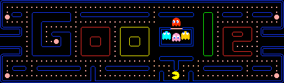
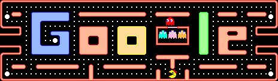
1
235
2
244
3
256
4
280
- 235
- 244
- 256
- 280
275 in our doodle
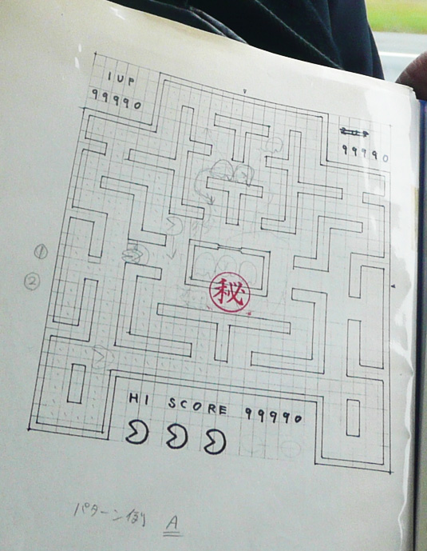
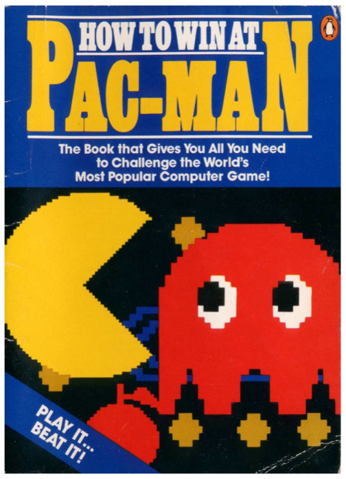
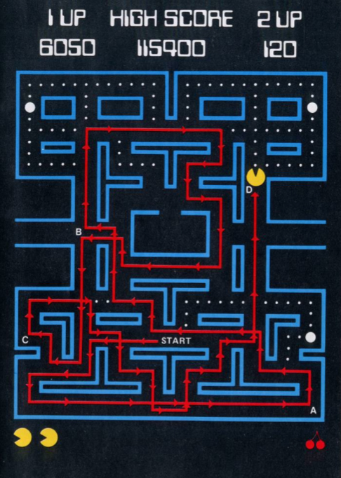
/**
* Send a random number from 0 to 1. The reason we're not using Math.random()
* is that you can't seed it reliably on all the browsers -- and we need
* random numbers to be repeatable between game plays too allow for patterns
* etc., and also a consistent kill screen that's procedurally generated.
* @return {number} Random number from 0 to 1.
*/
pacMan.rand = function() {
var t32 = 0x100000000;
var constant = 134775813;
var x = (constant * pacMan.randSeed + 1);
return (pacMan.randSeed = x % t32) / t32;
};
1
The eyes of the ghost should betray next move
2
Proper death for Ms. Pac-Man
3
Some people can’t change directions
4
Could stop with mouth open
5
Ghosts feel funny
6
Eyes should travel home even during ghost eating pause
- The eyes of the ghost should betray next move
- Proper death for Ms. Pac-Man
- Some people can’t change directions
- Could stop with mouth open
- Ghosts feel funny
- Eyes should travel home even during ghost eating pause
// We want to be more forgiving with control. If the player presses
// the arrow one or two pixels *after* the intersection, we still want
// to allow the turn.
var tile = pacMan.playfield[this.tilePos[0]][this.tilePos[1]];
if (tile && (tile.allowedDir & newDir)) {
var movement = PM_MOVEMENTS[this.dir];
var newPos = [this.pos[0], this.pos[1]];
newPos[movement.axis] -= movement.increment;
...
if (backtrackDist) {
this.dir = newDir;
this.pos[0] = this.tilePos[0];
this.pos[1] = this.tilePos[1];
var movement = PM_MOVEMENTS[this.dir];
this.pos[movement.axis] += movement.increment * backtrackDist;
return;
}
}
// If Marcin was a good programmer, the algorithms governing Pac-Man
// movements would be rock solid. That is not the case. Ryan found a bug
// once that made him go through a wall. If Marcin was a good tester, he
// would figure out how to reproduce and fix the bug. That is not the
// case. Hence a little protection below. This checks if a new tile is
// actually a valid path and if not, go back to the last-known good tile
// and stop Pac-Man in its tracks. This is essentially a "treating
// symptoms" protection, but hey, it's better than nothing, right?
if (!this.ghost && !pacMan.playfield[tilePos[0]][tilePos[1]].path) {
this.pos[0] = this.lastGoodTilePos[0];
this.pos[1] = this.lastGoodTilePos[1];
tilePos[0] = this.lastGoodTilePos[0];
tilePos[1] = this.lastGoodTilePos[1];
this.dir = PM_DIR_NONE;
} else {
this.lastGoodTilePos = [tilePos[0], tilePos[1]];
}
1
1
2
56
3
89
4
123
- 1
- 56
- 89
- 123
in 1 sprite
var FRAME_COUNT = 81;
var ANIMATION_POS = [[0,0,0,0],[87,114,34,40],[92,49,82,105],[92,49,82,107],[93,49,81,112],[100,136,40,26], ...
var curFrame = 0;
var jointWidth = 0;
function nextStep() {
var animPos = ANIMATION_POS[curFrame];
if (animPos[0]) {
var frameEl = document.createElement('div');
frameEl.style.left = animPos[0] + 'px';
frameEl.style.top = animPos[1] + 'px';
frameEl.style.width = animPos[2] + 'px';
frameEl.style.height = animPos[3] + 'px';
frameEl.style.backgroundPosition = (-jointWidth) + 'px 0';
canvasEl.appendChild(frameEl);
curFrame++;
jointWidth += animPos[2];
}
1
5 thousand
2
50 thousand
3
500 thousand
4
5 million
- 5,000
- 50,000
- 500,000
- 5,000,000
0
0